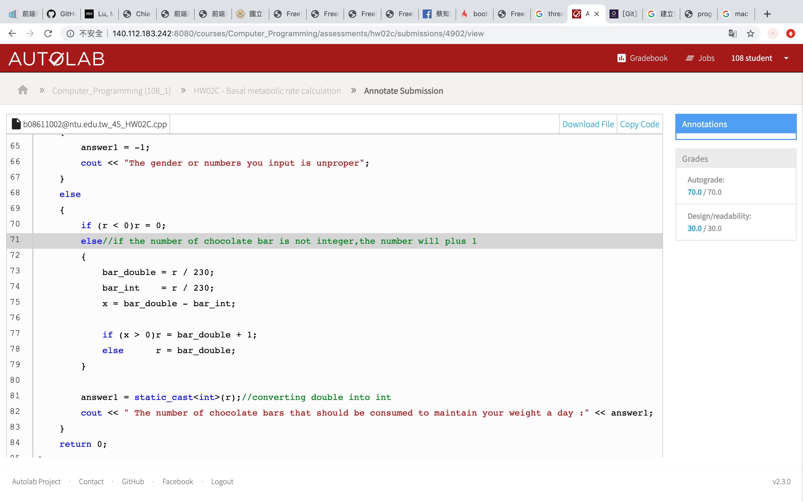
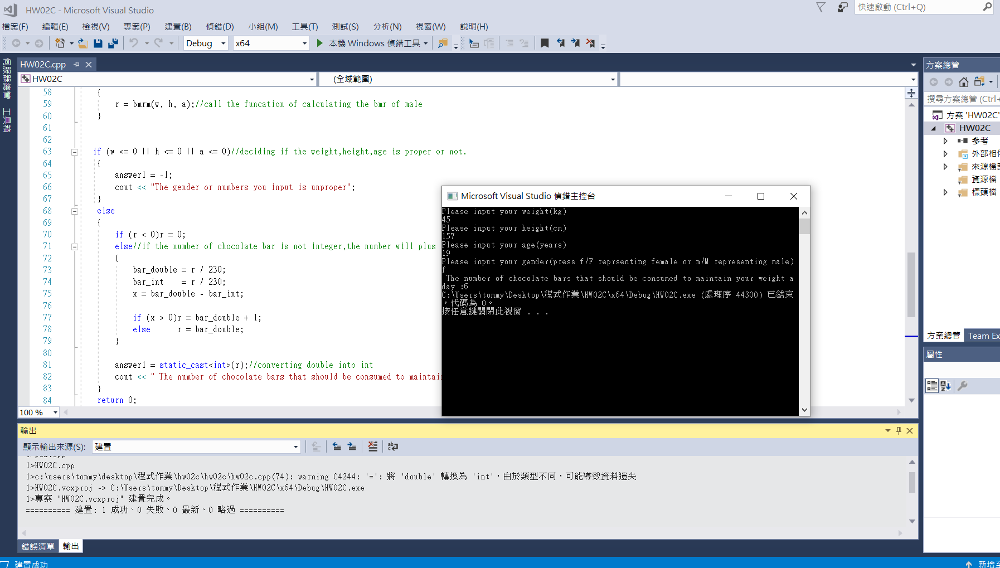

Write a program that allows the user to input his or her weight in kilograms, height in centimeters, age in years, and the character 'M' for male and 'F' for female. The program should then output the number of chocolate bars that should be consumed to maintain one's weight for the appropriate sex of the specified weight, height, and age. Check the results from your program with any BMR calculators on the internet.
result:
